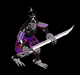
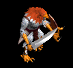
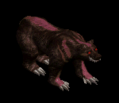
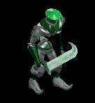
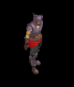
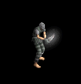
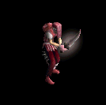
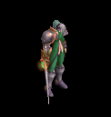

鎌 をドロップするmob一覧
一覧ページへ
| 斧骸骨戦士 | アンデット | 一般1 | |||||||
|---|---|---|---|---|---|---|---|---|---|
 | 両手剣(410) | 鈍器(270) | 矢(410) | 足(230) | 槍投擲機(210) | 帰還(160) | 鎌(410) | 魔弾(410) | |
| 攻撃骸骨戦士 | アンデット | 一般2 | |||||||
 | 両手剣(380) | ステッキ(250) | 盾(380) | 足(210) | 槍投擲機(190) | 帰還(150) | 鎌(380) | ||
| 骸骨狂戦士 | アンデット | 一般3 | |||||||
 | 両手剣(360) | 鈍器(240) | 矢(360) | 足(200) | 槍投擲機(180) | 帰還(140) | 鎌(360) | 魔弾(240) | |
| 死の斧 | アンデット | セミ1 | |||||||
 | 両手剣(390) | ステッキ(260) | 盾(390) | 足(220) | 槍投擲機(200) | 帰還(160) | 鎌(390) | ||
| 地獄の斧 | アンデット | ボス1 | |||||||
 | 両手剣(470) | 鈍器(310) | 盾(470) | 足(260) | 槍投擲機(240) | 帰還(190) | 鎌(470) | ||
| 大型骸骨 | アンデット | 一般1 | |||||||
|  | 鈍器(410) | 両手剣(270) | 弾(410) | 職業鎧(230) | 冠(210) | 能力向上1(160) | 鎌(270) | ||
| 幽霊鎧 | アンデット | 一般4 | |||||||
 | 弓(300) | 両手剣(200) | 盾(300) | 鎧(170) | 手首(150) | 能力向上1(120) | 鎌(200) | 銃(300) | |
| 幻想鎧 | アンデット | ボス1 | |||||||
 | 弓(470) | 両手剣(310) | 盾(470) | 鎧(260) | 手首(240) | 能力向上2(190) | 鎌(310) | 銃(470) | |
| 斧槍兵 | 人間 | 一般2 | |||||||
 | 槍(380) | 両手剣(250) | 状態異常回復1(380) | 鎧(210) | 手首(190) | 十字架(120) | 鎌(250) | 箒(380) | |
| コートナイト | 人間 | 一般3 | |||||||
 | 槍(360) | 両手剣(240) | イベント(360) | 兜・帽子(200) | 手首(180) | 十字架(130) | 鎌(240) | 箒(360) | |
| レッドアイ護衛兵 | 人間 | 一般4 | |||||||
 | 槍(300) | 両手剣(200) | 鍵(20) | 鎧(170) | 手首(150) | 十字架(140) | 鎌(200) | 箒(300) | |
| テンプラー | 人間 | セミ2 | |||||||
 | 槍(420) | 両手剣(280) | 鍵(30) | 兜・帽子(230) | 手首(210) | 十字架(150) | 鎌(280) | 箒(420) | |
| アベンジャー | 人間 | ボス2 | |||||||
 | 槍(490) | 両手剣(330) | 矢(490) | 鎧(270) | 手首(250) | 十字架(160) | 鎌(330) | 箒(490) | 魔弾(490) |
| 鷲戦士 | 悪魔 | 一般1 | |||||||
|  | 片手剣(410) | 両手剣(270) | 盾(410) | グローブ(230) | 手首(210) | 腕刺青(110) | 鎌(270) | クロー(410) | |
| 鷲剣士 | 悪魔 | セミ1 | |||||||
 | 片手剣(390) | 両手剣(260) | 盾(390) | グローブ(220) | 手首(200) | 腕刺青(140) | 鎌(260) | クロー(390) | |
| リザードマン | 悪魔 | 一般1 | |||||||
 | 槍(410) | 両手剣(270) | イベント(410) | 鎧(230) | 槍投擲機(210) | 肩刺青(90) | 鎌(270) | 箒(410) | |
| リザードウォリア | 悪魔 | 一般2 | |||||||
 | 槍(380) | 両手剣(250) | イベント(380) | 鎧(210) | 槍投擲機(190) | 肩刺青(100) | 鎌(250) | 箒(380) | |
| リザードキリング | 悪魔 | 一般3 | |||||||
 | 槍(360) | 両手剣(240) | イベント(360) | 鎧(200) | 槍投擲機(180) | 肩刺青(110) | 鎌(240) | 箒(360) | |
| ナーガファイター | 悪魔 | セミ1 | |||||||
 | 槍(390) | 両手剣(260) | イベント(390) | 鎧(220) | 槍投擲機(200) | 肩刺青(120) | 鎌(260) | 箒(390) | |
| ナーガスフィア | 悪魔 | ボス1 | |||||||
 | 槍(470) | 両手剣(310) | イベント(470) | グローブ(260) | 槍投擲機(240) | 肩刺青(130) | 鎌(310) | 箒(470) | |
| 赤い悪魔 | 悪魔 | ボス3 | |||||||
 | none(510) | 両手剣(340) | 鍵(510) | 職業鎧(280) | 首(260) | 能力向上1(200) | 鎌(340) | ||
| クラブシェル | 動物 | 一般1 | |||||||
 | 投擲(410) | 両手剣(270) | 盾(410) | 足(230) | 爪(210) | 帰還(160) | 鎌(270) | ||
| ビッグクラブ | 動物 | 一般2 | |||||||
 | 投擲(380) | 両手剣(250) | 状態異常回復1(380) | 足(210) | 指輪(190) | 能力向上2(150) | 鎌(250) | ||
| サイドウォーカー | 動物 | 一般3 | |||||||
 | 投擲(360) | 両手剣(240) | 盾(360) | 足(200) | 爪(180) | 宝石(140) | 鎌(240) | ||
| キングクラブ | 動物 | セミ1 | |||||||
 | 投擲(390) | 両手剣(260) | 状態異常回復1(390) | 足(220) | 指輪(200) | 帰還(160) | 鎌(260) | ||
| キャンサー | 動物 | ボス1 | |||||||
 | 投擲(470) | 両手剣(310) | 状態異常回復1(470) | 腰(260) | 爪(240) | 宝石(190) | 鎌(310) | ||
| ヘルハウンド | 動物 | ボス2 | |||||||
 | 牙(490) | 両手剣(330) | 鍵(50) | 職業鎧(270) | 槍投擲機(250) | 特殊1(200) | 鎌(330) | 双剣(490) | |
| 大型モグラ | 動物 | 一般3 | |||||||
 | 両手剣(360) | ステッキ(240) | 弾(360) | 職業鎧(200) | 指輪(180) | 能力向上1(140) | 鎌(360) | ||
| ポーラーベアー | 動物 | セミ1 | |||||||
|  | 両手剣(390) | 鞭(260) | 状態異常回復2(100) | 鎧(220) | イヤリング(200) | 宝石(160) | 鎌(390) | ||
| ゴーレム | 神獣 | 一般2 | |||||||
 | 鎌(100) | 両手剣(100) | 杖(250) | 本(250) | |||||
| クレイゴーレム | 神獣 | 一般3 | |||||||
 | 鎌(100) | 両手剣(100) | 杖(240) | 本(240) | |||||
| ロックゴーレム | 神獣 | 一般4 | |||||||
 | 鎌(100) | 両手剣(100) | ステッキ(200) | ||||||
| メタルゴーレム | 神獣 | セミ3 | |||||||
|  | 鎌(100) | 両手剣(100) | スリング(300) | ||||||
| ダイヤゴーレム | 神獣 | ボス1 | |||||||
 | 鎌(100) | 両手剣(100) | 鈍器(310) | ||||||
| トレント | 神獣 | 一般4 | |||||||
 | 鎌(200) | 杖(100) | 両手剣(200) | 本(100) | |||||
| シャドウス | 神獣 | セミ2 | |||||||
 | 鎌(100) | 両手剣(100) | スリング(280) | ||||||
| ホワイトシャドー | 神獣 | セミ2 | |||||||
 | 鎌(280) | クロー(100) | 片手剣(100) | 両手剣(280) | |||||
| 斧骸骨戦士Ex | アンデット | 一般1 | |||||||
| 両手剣(410) | 鈍器(270) | 矢(410) | 足(230) | 槍投擲機(210) | 帰還(160) | 鎌(410) | 魔弾(410) | |
| 攻撃骸骨戦士Ex | アンデット | 一般2 | |||||||
| 両手剣(380) | ステッキ(250) | 盾(380) | 足(210) | 槍投擲機(190) | 帰還(150) | 鎌(380) | ||
| 骸骨狂戦士Ex | アンデット | 一般3 | |||||||
| 両手剣(360) | 鈍器(240) | 矢(360) | 足(200) | 槍投擲機(180) | 帰還(140) | 鎌(360) | 魔弾(360) | |
| 死の斧Ex | アンデット | セミ1 | |||||||
| 両手剣(450) | ステッキ(300) | 盾(450) | 足(250) | 槍投擲機(230) | 帰還(180) | 鎌(450) | ||
| 地獄の斧Ex | アンデット | ボス1 | |||||||
| 両手剣(1200) | 鈍器(800) | 盾(1200) | 足(670) | 槍投擲機(600) | 帰還(480) | 鎌(1200) | ||
| 大型骸骨Ex | アンデット | 一般1 | |||||||
| 鈍器(410) | 両手剣(270) | 弾(410) | 職業鎧(230) | 冠(210) | 能力向上1(160) | 鎌(270) | |||
| 幽霊鎧Ex | アンデット | 一般4 | |||||||
| 弓(300) | 両手剣(200) | 盾(300) | 鎧(170) | 手首(150) | 能力向上1(120) | 鎌(200) | 銃(300) | |
| 幻想鎧Ex | アンデット | ボス1 | |||||||
| 弓(1200) | 両手剣(800) | 盾(1200) | 鎧(670) | 手首(600) | 能力向上2(480) | 鎌(800) | 銃(1200) | |
| 斧槍兵Ex | 人間 | 一般2 | |||||||
| 槍(380) | 両手剣(250) | 状態異常回復1(380) | 鎧(210) | 手首(190) | 十字架(120) | 鎌(250) | 箒(380) | |
| コートナイトEx | 人間 | 一般3 | |||||||
| 槍(360) | 両手剣(240) | イベント(360) | 兜・帽子(200) | 手首(180) | 十字架(130) | 鎌(240) | 箒(360) | |
| レッドアイ護衛兵Ex | 人間 | 一般4 | |||||||
| 槍(300) | 両手剣(200) | 鍵(30) | 鎧(170) | 手首(150) | 十字架(140) | 鎌(200) | 箒(300) | |
| テンプラーEx | 人間 | セミ2 | |||||||
| 槍(650) | 両手剣(430) | 鍵(50) | 兜・帽子(360) | 手首(330) | 十字架(150) | 鎌(430) | 箒(650) | |
| アベンジャーEx | 人間 | ボス2 | |||||||
| 槍(2000) | 両手剣(1330) | 矢(2000) | 鎧(1110) | 手首(1000) | 十字架(160) | 鎌(1330) | 箒(2000) | 魔弾(2000) |
| 鷲戦士Ex | 悪魔 | 一般1 | |||||||
| 片手剣(410) | 両手剣(270) | 盾(410) | グローブ(230) | 手首(210) | 腕刺青(110) | 鎌(270) | クロー(410) | ||
| 鷲剣士Ex | 悪魔 | セミ1 | |||||||
| 片手剣(450) | 両手剣(300) | 盾(450) | グローブ(250) | 手首(230) | 腕刺青(140) | 鎌(300) | クロー(450) | |
| リザードマンEx | 悪魔 | 一般1 | |||||||
| 槍(410) | 両手剣(270) | イベント(410) | 鎧(230) | 槍投擲機(210) | 肩刺青(90) | 鎌(270) | 箒(410) | |
| リザードウォリアEx | 悪魔 | 一般2 | |||||||
| 槍(380) | 両手剣(250) | イベント(380) | 鎧(210) | 槍投擲機(190) | 肩刺青(100) | 鎌(250) | 箒(380) | |
| キラーリザードEx | 悪魔 | 一般3 | |||||||
| 槍(360) | 両手剣(240) | イベント(360) | 鎧(200) | 槍投擲機(180) | 肩刺青(110) | 鎌(240) | 箒(360) | |
| ナーガファイタEx | 悪魔 | セミ1 | |||||||
| 槍(450) | 両手剣(300) | イベント(450) | 鎧(250) | 槍投擲機(230) | 肩刺青(120) | 鎌(300) | 箒(450) | |
| ナーガスフィアEx | 悪魔 | ボス1 | |||||||
| 槍(1200) | 両手剣(800) | イベント(1200) | グローブ(670) | 槍投擲機(600) | 肩刺青(130) | 鎌(800) | 箒(1200) | |
| 赤い悪魔Ex | 悪魔 | ボス3 | |||||||
| none(2800) | 両手剣(1870) | 鍵(700) | 職業鎧(1560) | 首(1400) | 能力向上1(1120) | 鎌(1870) | ||
| クラブシェルEx | 動物 | 一般1 | |||||||
| 投擲(410) | 両手剣(270) | 盾(410) | 足(230) | 爪(210) | 帰還(160) | 鎌(270) | ||
| ビッグクラブEx | 動物 | 一般2 | |||||||
| 投擲(380) | 両手剣(250) | 状態異常回復1(380) | 足(210) | 指輪(190) | 能力向上2(150) | 鎌(250) | ||
| サイドウォーカーEx | 動物 | 一般3 | |||||||
| 投擲(360) | 両手剣(240) | 盾(360) | 足(200) | 爪(180) | 宝石(140) | 鎌(240) | ||
| キングクラブEx | 動物 | セミ1 | |||||||
| 投擲(450) | 両手剣(300) | 状態異常回復1(450) | 足(250) | 指輪(230) | 帰還(180) | 鎌(300) | ||
| キャンサーEx | 動物 | ボス1 | |||||||
| 投擲(1200) | 両手剣(800) | 状態異常回復1(1200) | 腰(670) | 爪(600) | 宝石(480) | 鎌(800) | ||
| ヘルハウンドEx | 動物 | ボス2 | |||||||
| 牙(2000) | 両手剣(1330) | 鍵(130) | 職業鎧(1110) | 槍投擲機(1000) | 特殊1(800) | 鎌(1330) | 双剣(2000) | |
| 大型モグラEx | 動物 | 一般3 | |||||||
| 両手剣(360) | ステッキ(240) | 弾(360) | 職業鎧(200) | 指輪(180) | 能力向上1(140) | 鎌(360) | ||
| 北極熊Ex | 動物 | セミ1 | |||||||
| 両手剣(450) | 鞭(300) | 状態異常回復2(110) | 鎧(250) | イヤリング(230) | 宝石(180) | 鎌(450) | |||
| ゴーレムEx | 神獣 | 一般2 | |||||||
| 両手剣(380) | 杖(250) | 状態異常回復2(100) | 足(210) | 爪(190) | 腕刺青(130) | 鎌(380) | 本(250) | |
| クレイゴーレムEx | 神獣 | 一般3 | |||||||
| 両手剣(360) | 杖(240) | 状態異常回復2(90) | 足(200) | 槍投擲機(180) | 腕刺青(140) | 鎌(360) | 本(240) | |
| ロックゴーレムEx | 神獣 | 一般4 | |||||||
| 両手剣(300) | ステッキ(200) | 状態異常回復2(80) | 足(170) | 槍投擲機(150) | 腕刺青(150) | 鎌(300) | ||
| メタルゴーレムEx | 神獣 | セミ3 | |||||||
| 両手剣(800) | スリング(530) | 状態異常回復2(200) | 足(440) | 槍投擲機(400) | 腕刺青(160) | 鎌(800) | |||
| ダイヤゴーレムEx | 神獣 | ボス1 | |||||||
| 両手剣(1200) | 鈍器(800) | 状態異常回復2(300) | 足(670) | 冠(600) | 腕刺青(170) | 鎌(1200) | ||
| トレントEx | 神獣 | 一般4 | |||||||
| 杖(300) | 両手剣(200) | cP回復(300) | 腰(170) | 冠(150) | 能力向上1(120) | 鎌(200) | 本(300) | |
| シャドウスEx | 神獣 | セミ2 | |||||||
| 両手剣(650) | スリング(430) | 盾(650) | グローブ(360) | 手首(330) | 特殊1(260) | 鎌(650) | ||
| ホワイトシャドーEx | 神獣 | セミ2 | |||||||
| 片手剣(650) | 両手剣(430) | 盾(650) | 鎧(360) | 手首(330) | 特殊1(260) | 鎌(430) | クロー(650) | |
| 斧骸骨戦士Zin | アンデット | 一般1 | |||||||
| 両手剣(1210) | 鈍器(810) | 矢(1210) | 足(670) | 槍投擲機(610) | 帰還(480) | 鎌(1210) | 魔弾(1210) | |
| 攻撃骸骨戦士Zin | アンデット | 一般2 | |||||||
| 両手剣(1380) | ステッキ(920) | 盾(1380) | 足(770) | 槍投擲機(690) | 帰還(550) | 鎌(1380) | ||
| 骸骨狂戦士Zin | アンデット | 一般3 | |||||||
| 両手剣(1560) | 鈍器(1040) | 矢(1560) | 足(870) | 槍投擲機(780) | 帰還(620) | 鎌(1560) | 魔弾(1560) | |
| 死の斧Zin | アンデット | セミ1 | |||||||
| 両手剣(650) | ステッキ(430) | 盾(650) | 足(360) | 槍投擲機(330) | 帰還(260) | 鎌(650) | ||
| 地獄の斧Zin | アンデット | ボス1 | |||||||
| 両手剣(1000) | 鈍器(670) | 盾(1000) | 足(560) | 槍投擲機(500) | 帰還(400) | 鎌(1000) | ||
| 大型骸骨Zin | アンデット | 一般1 | |||||||
| 鈍器(1210) | 両手剣(810) | 弾(1210) | 職業鎧(670) | 冠(610) | 能力向上1(480) | 鎌(810) | |||
| 幽霊鎧Zin | アンデット | 一般4 | |||||||
| 弓(1200) | 両手剣(800) | 盾(1200) | 鎧(670) | 手首(600) | 能力向上1(480) | 鎌(800) | 銃(1200) | |
| 幻想鎧Zin | アンデット | ボス1 | |||||||
| 弓(1000) | 両手剣(670) | 盾(1000) | 鎧(560) | 手首(500) | 能力向上2(400) | 鎌(670) | 銃(1000) | |
| 斧槍兵Zin | 人間 | 一般2 | |||||||
| 槍(1380) | 両手剣(920) | 状態異常回復1(1380) | 鎧(770) | 手首(690) | 十字架(120) | 鎌(920) | 箒(1380) | |
| コートナイトZin | 人間 | 一般3 | |||||||
| 槍(1560) | 両手剣(1040) | イベント(1560) | 兜・帽子(870) | 手首(780) | 十字架(130) | 鎌(1040) | 箒(1560) | |
| レッドアイ護衛兵Zin | 人間 | 一般4 | |||||||
| 槍(1200) | 両手剣(800) | 鍵(70) | 鎧(670) | 手首(600) | 十字架(140) | 鎌(800) | 箒(1200) | |
| テンプラーZin | 人間 | セミ2 | |||||||
| 槍(750) | 両手剣(500) | 鍵(80) | 兜・帽子(420) | 手首(380) | 十字架(150) | 鎌(500) | 箒(750) | |
| アベンジャーZin | 人間 | ボス2 | |||||||
| 槍(1100) | 両手剣(730) | 矢(1100) | 鎧(610) | 手首(550) | 十字架(160) | 鎌(730) | 箒(1100) | 魔弾(1100) |
| 鷲戦士Zin | 悪魔 | 一般1 | |||||||
| 片手剣(1210) | 両手剣(810) | 盾(1210) | グローブ(670) | 手首(610) | 腕刺青(110) | 鎌(810) | クロー(1210) | ||
| 鷲剣士Zin | 悪魔 | セミ1 | |||||||
| 片手剣(650) | 両手剣(430) | 盾(650) | グローブ(360) | 手首(330) | 腕刺青(140) | 鎌(430) | クロー(650) | |
| リザードマンZin | 悪魔 | 一般1 | |||||||
| 槍(1210) | 両手剣(810) | イベント(1210) | 鎧(670) | 槍投擲機(610) | 肩刺青(90) | 鎌(810) | 箒(1210) | |
| リザードウォリアZin | 悪魔 | 一般2 | |||||||
| 槍(1380) | 両手剣(920) | イベント(1380) | 鎧(770) | 槍投擲機(690) | 肩刺青(100) | 鎌(920) | 箒(1380) | |
| リザードキリングZin | 悪魔 | 一般3 | |||||||
| 槍(1560) | 両手剣(1040) | イベント(1560) | 鎧(870) | 槍投擲機(780) | 肩刺青(110) | 鎌(1040) | 箒(1560) | |
| ナーガファイターZin | 悪魔 | セミ1 | |||||||
| 槍(650) | 両手剣(430) | イベント(650) | 鎧(360) | 槍投擲機(330) | 肩刺青(120) | 鎌(430) | 箒(650) | |
| ナーガスフィアZin | 悪魔 | ボス1 | |||||||
| 槍(1000) | 両手剣(670) | イベント(1000) | グローブ(560) | 槍投擲機(500) | 肩刺青(130) | 鎌(670) | 箒(1000) | |
| 赤い悪魔Zin | 悪魔 | ボス3 | |||||||
| none(1200) | 両手剣(800) | 鍵(1200) | 職業鎧(670) | 首(600) | 能力向上1(480) | 鎌(800) | ||
| クラブシェルZin | 動物 | 一般1 | |||||||
| 投擲(1210) | 両手剣(810) | 盾(1210) | 足(670) | 爪(610) | 帰還(480) | 鎌(810) | ||
| ビッグクラブZin | 動物 | 一般2 | |||||||
| 投擲(1380) | 両手剣(920) | 状態異常回復1(1380) | 足(770) | 指輪(690) | 能力向上2(550) | 鎌(920) | ||
| サイドウォーカーZin | 動物 | 一般3 | |||||||
| 投擲(1560) | 両手剣(1040) | 盾(1560) | 足(870) | 爪(780) | 宝石(620) | 鎌(1040) | ||
| キングクラブZin | 動物 | セミ1 | |||||||
| 投擲(650) | 両手剣(430) | 状態異常回復1(650) | 足(360) | 指輪(330) | 帰還(260) | 鎌(430) | ||
| キャンサーZin | 動物 | ボス1 | |||||||
| 投擲(1000) | 両手剣(670) | 状態異常回復1(1000) | 腰(560) | 爪(500) | 宝石(400) | 鎌(670) | ||
| ヘルハウンドZin | 動物 | ボス2 | |||||||
| 牙(1100) | 両手剣(730) | 鍵(70) | 職業鎧(610) | 槍投擲機(550) | 特殊1(440) | 鎌(730) | 双剣(1100) | |
| 大型モグラZin | 動物 | 一般3 | |||||||
| 両手剣(1560) | ステッキ(1040) | 弾(1560) | 職業鎧(870) | 指輪(780) | 能力向上1(620) | 鎌(1560) | ||
| 北極熊Zin | 動物 | セミ1 | |||||||
| 両手剣(650) | 鞭(430) | 状態異常回復2(160) | 鎧(360) | イヤリング(330) | 宝石(260) | 鎌(650) | |||
| ゴーレムZin | 神獣 | 一般2 | |||||||
| 両手剣(1380) | 杖(920) | 状態異常回復2(350) | 足(770) | 爪(690) | 腕刺青(130) | 鎌(1380) | 本(920) | |
| クレイゴーレムZin | 神獣 | 一般3 | |||||||
| 両手剣(1560) | 杖(1040) | 状態異常回復2(390) | 足(870) | 槍投擲機(780) | 腕刺青(140) | 鎌(1560) | 本(1040) | |
| ロックゴーレムZin | 神獣 | 一般4 | |||||||
| 両手剣(1200) | ステッキ(800) | 状態異常回復2(300) | 足(670) | 槍投擲機(600) | 腕刺青(150) | 鎌(1200) | ||
| メタルゴーレムZin | 神獣 | セミ3 | |||||||
| 両手剣(900) | スリング(600) | 状態異常回復2(230) | 足(500) | 槍投擲機(450) | 腕刺青(160) | 鎌(900) | |||
| ダイヤゴーレムZin | 神獣 | ボス1 | |||||||
| 両手剣(1000) | 鈍器(670) | 状態異常回復2(250) | 足(560) | 冠(500) | 腕刺青(170) | 鎌(1000) | ||
| トレントZin | 神獣 | 一般4 | |||||||
| 杖(1200) | 両手剣(800) | cP回復(1200) | 腰(670) | 冠(600) | 能力向上1(480) | 鎌(800) | 本(1200) | |
| シャドウスZin | 神獣 | セミ2 | |||||||
| 両手剣(750) | スリング(500) | 盾(750) | グローブ(420) | 手首(380) | 特殊1(300) | 鎌(750) | ||
| ホワイトシャドーZin | 神獣 | セミ2 | |||||||
| 片手剣(750) | 両手剣(500) | 盾(750) | 鎧(420) | 手首(380) | 特殊1(300) | 鎌(500) | クロー(750) | |
 | 弓(1560) | 片手剣(1040) | 矢(1560) | グローブ(900) | 手首(780) | 腕刺青(170) | クロー(1040) | 銃(1560) | 魔弾(1560) |
| ハイエルフ Zin | 人間 | 一般4 | |||||||
 | 片手剣(50) | ブローチ(150) | 足(100) | 能力向上1(80) | 両手剣(20) | 兜・帽子(30) | 鎌(20) | クロー(50) | |
| ならず者 Zin | 人間 | 一般3 | |||||||
 | 両手剣(70) | 爪(200) | 腕刺青(130) | 笛(100) | 弓(30) | HP回復(40) | 鎌(70) | 銃(30) | |
| 襲撃団3 Zin | 人間 | ボス2 | |||||||
|  | 投擲(450) | 爪(1350) | 牙(900) | 鞭(720) | 両手剣(180) | イベント(270) | 鎌(180) | 双剣(900) | |
| ルーンファイター Zin | 人間 | セミ3 | |||||||
 | 両手剣(180) | 爪(530) | 牙(350) | 笛(280) | 状態異常回復1(70) | HP回復(110) | 鎌(180) | 双剣(350) | |
| シーク守護者3 Zin | 人間 | ボス2 | |||||||
 | 鎧(450) | 首(1350) | 杖(900) | 手首(720) | 両手剣(180) | HP回復(270) | 鎌(180) | 本(900) | |
| 逃亡魔法師Zin | 人間 | 一般3 | |||||||
 | 宝石(70) | 鈍器(200) | 両手剣(130) | 槍(100) | ステッキ(30) | グローブ(40) | 鎌(130) | 箒(100) | |
| 逃亡魔法師1 Zin | 人間 | 一般4 | |||||||
 | 両手剣(50) | ブローチ(150) | cP回復(100) | 職業鎧(80) | 状態異常回復1(20) | 杖(30) | 鎌(50) | 本(30) | |
| 逃亡魔法師2 Zin | 人間 | セミ1 | |||||||
|  | 投擲(90) | cP回復(260) | 両手剣(180) | 槍(140) | ステッキ(40) | HP回復(50) | 鎌(180) | 箒(140) | |
| 逃亡魔法師3 Zin | 人間 | セミ2 | |||||||
 | 鍵(140) | 弾(410) | 両手剣(280) | 能力向上1(220) | 肩刺青(60) | グローブ(80) | 鎌(280) | ||
| 逃亡魔法師4 Zin | 人間 | ボス1 | |||||||
 | 投擲(250) | ブローチ(750) | 両手剣(500) | 十字架(400) | ステッキ(100) | イベント(150) | 鎌(500) | ||
| 逃亡ハンター Zin | 人間 | 一般4 | |||||||
 | 投擲(50) | ブローチ(150) | 両手剣(100) | 能力向上1(80) | 状態異常回復1(20) | HP回復(30) | 鎌(100) | ||
| 逃亡ハンター1 Zin | 人間 | セミ1 | |||||||
|  | 能力向上2(90) | 鈍器(260) | 両手剣(180) | 鞭(140) | ステッキ(40) | 宝石(50) | 鎌(180) | ||
| 逃亡ハンター3 Zin | 人間 | ボス1 | |||||||
 | 宝石(250) | 状態異常回復2(750) | 両手剣(500) | cP回復(400) | 鞭(100) | イベント(150) | 鎌(500) | ||
| 逃亡ハンター4 Zin | 人間 | ボス2 | |||||||
 | 投擲(450) | 鈍器(1350) | 両手剣(900) | 槍(720) | ステッキ(180) | グローブ(270) | 鎌(900) | 箒(720) | |
| 脱獄犯 Zin | 人間 | セミ1 | |||||||
 | 投擲(90) | ブローチ(260) | 両手剣(180) | 十字架(140) | 肩刺青(40) | cP回復(50) | 鎌(140) | ||
| 脱獄犯2 Zin | 人間 | セミ3 | |||||||
 | 投擲(180) | 宝石(530) | 両手剣(350) | 槍(280) | 弾(70) | HP回復(110) | 鎌(350) | 箒(280) | |
| 脱獄犯3 Zin | 人間 | ボス1 | |||||||
 | 鍵(250) | 鈍器(750) | 両手剣(500) | 能力向上1(400) | ステッキ(100) | グローブ(150) | 鎌(500) | ||
| 脱獄犯4 Zin | 人間 | ボス3 | |||||||
 | 投擲(600) | ブローチ(1800) | 腕刺青(1200) | 槍(960) | 両手剣(240) | グローブ(360) | 鎌(240) | 箒(960) | |
| 古代悪魔 Zin | 悪魔 | 一般4 | |||||||
 | 指輪(130) | ブローチ(160) | 両手剣(70) | 十字架(40) | 弓(20) | 宝石(10) | 鎌(70) | 銃(20) | |
| 古代悪魔1 Zin | 悪魔 | セミ1 | |||||||
 | 鍵(230) | 首(280) | 両手剣(120) | 手首(70) | 状態異常回復1(40) | グローブ(20) | 鎌(120) | ||
| 古代悪魔3 Zin | 悪魔 | ボス2 | |||||||
 | 宝石(1170) | 首(1440) | 両手剣(590) | 能力向上1(360) | 弓(180) | グローブ(90) | 鎌(590) | 銃(180) | |
| 古代悪魔4 Zin | 悪魔 | ボス3 | |||||||
 | 指輪(1560) | 状態異常回復2(1920) | 両手剣(790) | 手首(480) | 状態異常回復1(240) | グローブ(120) | 鎌(790) | ||
| 死神 Zin | 悪魔 | 一般4 | |||||||
 | 指輪(130) | 首(160) | 両手剣(70) | 手首(40) | 弓(20) | グローブ(10) | 鎌(70) | 銃(20) | |
| 死神3 Zin | 悪魔 | ボス2 | |||||||
 | 能力向上2(1170) | 職業鎧(1440) | 両手剣(590) | 能力向上1(360) | 肩刺青(180) | グローブ(90) | 鎌(590) | ||
| 邪臣1 Zin | 悪魔 | セミ2 | |||||||
 | 指輪(360) | 首(440) | 両手剣(180) | 能力向上1(110) | 状態異常回復1(60) | 杖(30) | 鎌(180) | 本(30) | |
| 邪臣2 Zin | 悪魔 | セミ3 | |||||||
 | 鍵(460) | ブローチ(560) | 両手剣(230) | 十字架(140) | 弓(70) | グローブ(40) | 鎌(230) | 銃(70) | |
| 邪臣4 Zin | 悪魔 | ボス3 | |||||||
 | 鍵(1560) | 首(1920) | 両手剣(790) | 手首(480) | 弓(240) | グローブ(120) | 鎌(790) | 銃(240) | |
| カマキリ戦士3 Zin | 悪魔 | ボス2 | |||||||
 | 両手剣(1170) | ブローチ(1440) | 腕刺青(590) | 槍(360) | 状態異常回復1(180) | HP回復(90) | 鎌(1170) | 箒(360) | |
| ペンティライダー4 Zin | 悪魔 | ボス3 | |||||||
 | 投擲(1560) | 鈍器(1920) | 弾(790) | 槍(480) | 両手剣(240) | 翼(120) | 鎌(240) | 箒(480) | 水晶(120) |
| 蛙3 Zin | 動物 | ボス2 | |||||||
 | 両手剣(630) | 爪(450) | 帰還(360) | 能力向上1(270) | 肩刺青(180) | イベント(90) | 鎌(630) | ||
| ハリネズミカエル3 Zin | 動物 | ボス2 | |||||||
 | 両手剣(630) | 状態異常回復2(450) | 足(360) | 槍(270) | 槍投擲機(180) | cP回復(90) | 鎌(630) | 箒(270) | |
| 装甲亀4 Zin | 動物 | ボス3 | |||||||
 | 冠(840) | 鈍器(600) | 腕刺青(480) | 能力向上1(360) | 両手剣(240) | 盾(120) | 鎌(240) | ||
| 死の影 | 神獣 | セミ2 | |||||||
| 鎌(100) | 両手剣(100) | スリング(280) | ||||||
| 死の影 Ex | 神獣 | セミ2 | |||||||
| 両手剣(650) | スリング(430) | 盾(650) | グローブ(360) | 手首(330) | 特殊1(260) | 鎌(650) | ||
| ベイシャゴーレム | 神獣 | 一般2 | |||||||
| 鎌(100) | 両手剣(100) | 杖(250) | 本(250) | |||||
| 泥ゴーレム | 神獣 | 一般3 | |||||||
| 鎌(100) | 両手剣(100) | 杖(240) | 本(240) | |||||
| 石ゴーレム | 神獣 | 一般4 | |||||||
| 鎌(100) | 両手剣(100) | ステッキ(200) | ||||||
| 金属ゴーレム | 神獣 | セミ3 | |||||||
| 鎌(100) | 両手剣(100) | スリング(300) | |||||||
| 金剛石ゴーレム | 神獣 | ボス1 | |||||||
| 鎌(100) | 両手剣(100) | 鈍器(310) | ||||||
| ベイシャゴーレム Ex | 神獣 | 一般2 | |||||||
| 両手剣(380) | 杖(250) | 状態異常回復2(100) | 足(210) | 爪(190) | 腕刺青(130) | 鎌(380) | 本(250) | |
| 泥ゴーレム Ex | 神獣 | 一般3 | |||||||
| 両手剣(360) | 杖(240) | 状態異常回復2(90) | 足(200) | 槍投擲機(180) | 腕刺青(140) | 鎌(360) | 本(240) | |
| 石ゴーレム Ex | 神獣 | 一般4 | |||||||
| 両手剣(300) | ステッキ(200) | 状態異常回復2(80) | 足(170) | 槍投擲機(150) | 腕刺青(150) | 鎌(300) | ||
| 金属ゴーレム Ex | 神獣 | セミ3 | |||||||
| 両手剣(800) | スリング(530) | 状態異常回復2(200) | 足(440) | 槍投擲機(400) | 腕刺青(160) | 鎌(800) | |||
| 金剛石ゴーレム Ex | 神獣 | ボス1 | |||||||
| 両手剣(1200) | 鈍器(800) | 状態異常回復2(300) | 足(670) | 冠(600) | 腕刺青(170) | 鎌(1200) | ||
| ハイエルフ Zin | 人間 | 一般4 | |||||||
| 片手剣(50) | ブローチ(150) | 足(100) | 能力向上1(80) | 両手剣(20) | 兜・帽子(30) | 鎌(20) | クロー(50) | |
| さすらう傭兵 Zin | 人間 | 一般4 | |||||||
| 両手剣(70) | 爪(200) | 腕刺青(130) | 笛(100) | 弓(30) | HP回復(40) | 鎌(70) | 銃(30) | |
| スコフィールダー Zin | 人間 | 一般4 | |||||||
| 宝石(70) | 鈍器(200) | 両手剣(130) | 槍(100) | ステッキ(30) | グローブ(40) | 鎌(130) | 箒(100) | |
| 引導者 Zin | 悪魔 | 一般4 | |||||||
| 指輪(130) | 首(160) | 両手剣(70) | 手首(40) | 弓(20) | グローブ(10) | 鎌(70) | 銃(20) | |
| ハゲワシ剣士 Zin | 悪魔 | セミ1 | |||||||
| 片手剣(650) | 両手剣(430) | 盾(650) | グローブ(360) | 手首(330) | 腕刺青(140) | 鎌(430) | クロー(650) | |
| 時の大樹 Zin | 神獣 | セミ1 | |||||||
| 杖(1200) | 両手剣(800) | cP回復(1200) | 腰(670) | 冠(600) | 能力向上1(480) | 鎌(800) | 本(1200) | |
| モリネル守護神 | 神獣 | ボス1 | |||||||
| 両手剣(1000) | 鈍器(670) | 状態異常回復2(250) | 足(560) | 冠(500) | 腕刺青(170) | 鎌(1000) | ||
| ハイエルフ Zin | 人間 | 一般4 | |||||||
| 片手剣(50) | ブローチ(150) | 足(100) | 能力向上1(80) | 両手剣(20) | 兜・帽子(30) | 鎌(20) | クロー(50) | |
| さすらう傭兵 Zin | 人間 | 一般4 | |||||||
| 両手剣(70) | 爪(200) | 腕刺青(130) | 笛(100) | 弓(30) | HP回復(40) | 鎌(70) | 銃(30) | |
| 引導者 Zin | 悪魔 | 一般4 | |||||||
| 指輪(130) | 首(160) | 両手剣(70) | 手首(40) | 弓(20) | グローブ(10) | 鎌(70) | ||
| スコフィールダー Zin | 人間 | 一般4 | |||||||
| 宝石(70) | 鈍器(200) | 両手剣(130) | 槍(100) | ステッキ(30) | グローブ(40) | 鎌(130) | 箒(100) | |
| 大型モグラEv | 動物 | 一般3 | |||||||
| 両手剣(1560) | ステッキ(1040) | 弾(1560) | 職業鎧(870) | 指輪(780) | 能力向上1(620) | 鎌(1560) | ||
| クレイゴーレムEv | 神獣 | 一般3 | |||||||
| 両手剣(1560) | 杖(1040) | 状態異常回復2(390) | 足(870) | 槍投擲機(780) | 腕刺青(140) | 鎌(1560) | 本(1040) | |
| コートナイトEv | 人間 | 一般3 | |||||||
| 槍(1560) | 両手剣(1040) | イベント(1560) | 兜・帽子(870) | 手首(780) | 十字架(130) | 鎌(1040) | 箒(1560) | |
| 骸骨狂戦士Ev | アンデット | 一般3 | |||||||
| 両手剣(1560) | 鈍器(1040) | 矢(1560) | 足(870) | 槍投擲機(780) | 帰還(620) | 鎌(1560) | 魔弾(1560) | |
| サイドウォーカーEv | 動物 | 一般3 | |||||||
| 投擲(1560) | 両手剣(1040) | 盾(1560) | 足(870) | 爪(780) | 宝石(620) | 鎌(1040) | ||
| リザードキリングEv | 悪魔 | 一般3 | |||||||
| 槍(1560) | 両手剣(1040) | イベント(1560) | 鎧(870) | 槍投擲機(780) | 肩刺青(110) | 鎌(1040) | 箒(1560) | |
| トレントEv | 神獣 | 一般4 | |||||||
| 杖(1200) | 両手剣(800) | cP回復(1200) | 腰(670) | 冠(600) | 能力向上1(480) | 鎌(800) | 本(1200) | |
| レッドアイ護衛兵Ev | 人間 | 一般4 | |||||||
| 槍(1200) | 両手剣(800) | 鍵(70) | 鎧(670) | 手首(600) | 十字架(140) | 鎌(800) | 箒(1200) | |
| ロックゴーレムEv | 神獣 | 一般4 | |||||||
| 両手剣(1200) | ステッキ(800) | 状態異常回復2(300) | 足(670) | 槍投擲機(600) | 腕刺青(150) | 鎌(1200) | ||
| 幽霊鎧Ev | アンデット | 一般4 | |||||||
| 弓(1200) | 両手剣(800) | 盾(1200) | 鎧(670) | 手首(600) | 能力向上1(480) | 鎌(800) | 銃(1200) | |
| メタルゴーレムEv | 神獣 | セミ3 | |||||||
| 両手剣(900) | スリング(600) | 状態異常回復2(230) | 足(500) | 槍投擲機(450) | 腕刺青(160) | 鎌(900) | |||
| ヘルハウンドEv | 動物 | ボス2 | |||||||
| 牙(1100) | 両手剣(730) | 鍵(70) | 職業鎧(610) | 槍投擲機(550) | 特殊1(440) | 鎌(730) | 双剣(1100) | |
| 斧骸骨戦士Sp | アンデット | 一般4 | |||||||
| 両手剣(1200) | 鈍器(800) | 矢(1200) | 足(700) | 槍投擲機(600) | 帰還(500) | 鎌(1200) | 魔弾(1200) | |
| 斧槍兵Sp | 人間 | 一般4 | |||||||
| 槍(1400) | 両手剣(900) | 状態異常回復1(1400) | 鎧(800) | 手首(700) | 十字架(100) | 鎌(900) | 箒(1400) | |
| リザードマンSp | 悪魔 | 一般4 | |||||||
| 槍(1210) | 両手剣(810) | イベント(1210) | 鎧(670) | 槍投擲機(610) | 肩刺青(90) | 鎌(810) | 箒(1210) | |
| テンプラーSp | 人間 | 一般4 | |||||||
| 槍(1400) | 両手剣(900) | 状態異常回復1(1400) | 鎧(800) | 手首(700) | 十字架(100) | 鎌(900) | 箒(1400) | |
| 逃亡魔法師Sp | 人間 | 一般4 | |||||||
| 宝石(1000) | 鈍器(1400) | 両手剣(800) | 槍(700) | ステッキ(600) | グローブ(400) | 鎌(1400) | 箒(700) | |
| 覚醒逃亡ハンターZin | 人間 | セミ1 | |||||||
| 能力向上2(90) | 鈍器(260) | 両手剣(180) | 鞭(140) | ステッキ(40) | 宝石(50) | 鎌(180) | ||
| 逃亡ハンター Sp | 人間 | 一般4 | |||||||
| 宝石(1000) | 鈍器(1400) | 両手剣(800) | 槍(700) | ステッキ(600) | グローブ(400) | 鎌(1400) | 箒(700) | |
| さすらう傭兵 Zin[2] | 人間 | 一般4 | |||||||
 | 両手剣(70) | 爪(200) | 腕刺青(130) | 笛(100) | 弓(30) | HP回復(40) | 鎌(70) | 銃(30) | |
| ハイエルフ Sp | 人間 | 一般4 | |||||||
|  | 片手剣(50) | ブローチ(150) | 足(100) | 能力向上1(80) | 両手剣(20) | 兜・帽子(30) | 鎌(20) | クロー(50) | |
| 逃亡魔法師Sp[テスト用] | 人間 | 一般4 | |||||||
| 宝石(1000) | 鈍器(1400) | 両手剣(800) | 槍(700) | ステッキ(600) | グローブ(400) | 鎌(1400) | 箒(700) |